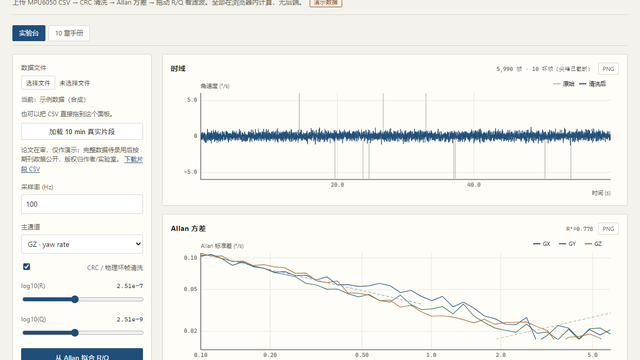
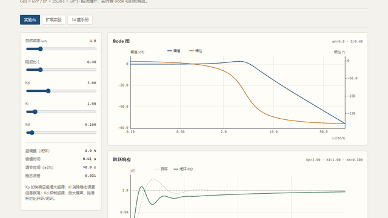
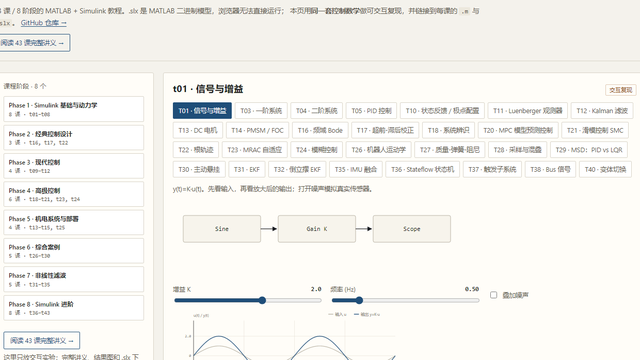

INSTRUMENT 01
IMU 数据实验室
上传 CSV → CRC 清洗 → 三轴 Allan → 拟合 ARW/RRW → 调 R/Q 看卡尔曼滤波。附 10 章实验手册、PNG/CSV 导出与参数链接。

INSTRUMENT 02
Control Play
二阶系统的 Bode、阶跃与 PID 闭环，外加状态反馈、观测器、根轨迹、离散化 4 个扩展实验；附 14 章实验手册。

TUTORIAL 03
Simulink 教程 · 交互复现
43 课 / 8 阶段的 Simulink 控制教程：43 篇新手讲义 + 19 个交互复现（信号、PID、Kalman、Bode、MPC、滑模、根轨迹、模糊、IMU、Stateflow…），附 .m/.slx 源文件。
